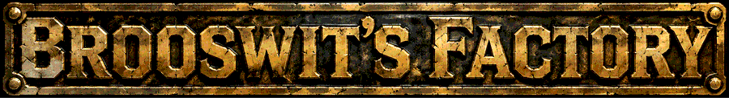
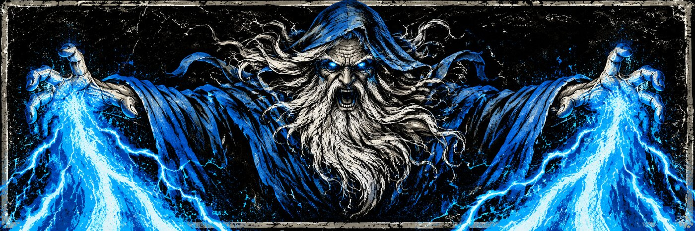

A harness that wraps Herdr
The software factory daemon. It watches your Jira, runs one AI agent per matching ticket, and pushes ticket changes to those agents as they happen. A live view lists the active agents and opens a terminal on any of them.
A Chrome extension that slides a butchr agent panel in from the side of the page you're on, with a live terminal for that page's agent. It's for people already running butchr who want to talk to an agent without leaving the page.